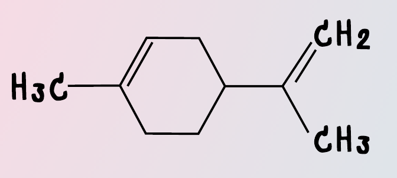

Limonene

Image source: Topic 1 image sources
| Vietnamese | Limonene |
|---|---|
| English | Limonene |
| Pronunciation | /ˈlɪm.ə.niːn/ |
| Word type | Danh từ (Noun) |
Meaning (Vietnamese)
Limonene là một hydrocarbon lỏng màu vàng lục nhạt
Meaning (English)
Limonene (/ˈlɪmənˌiːn/) is a slightly yellow-green liquid aliphatic hydrocarbon
Example
Limonene is a major component of the aromatic scents and resins characteristic of numerous coniferous and broadleaved trees
Limonene là thành phần chính của các mùi hương và nhựa thơm đặc trưng của nhiều loại cây lá kim và cây lá rộng.
Source of information: English Wikipedia; Topic 1 notes (see Sources)